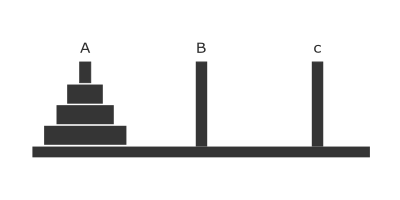
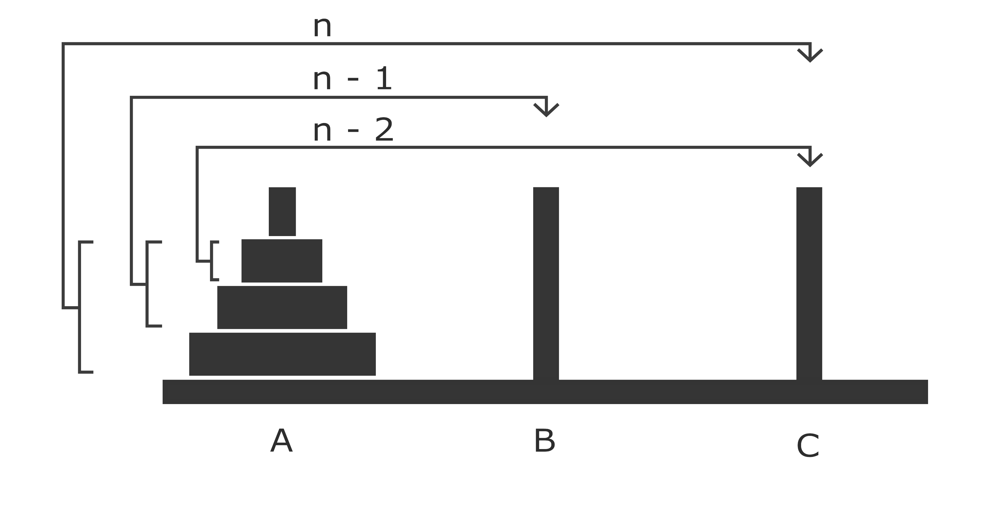
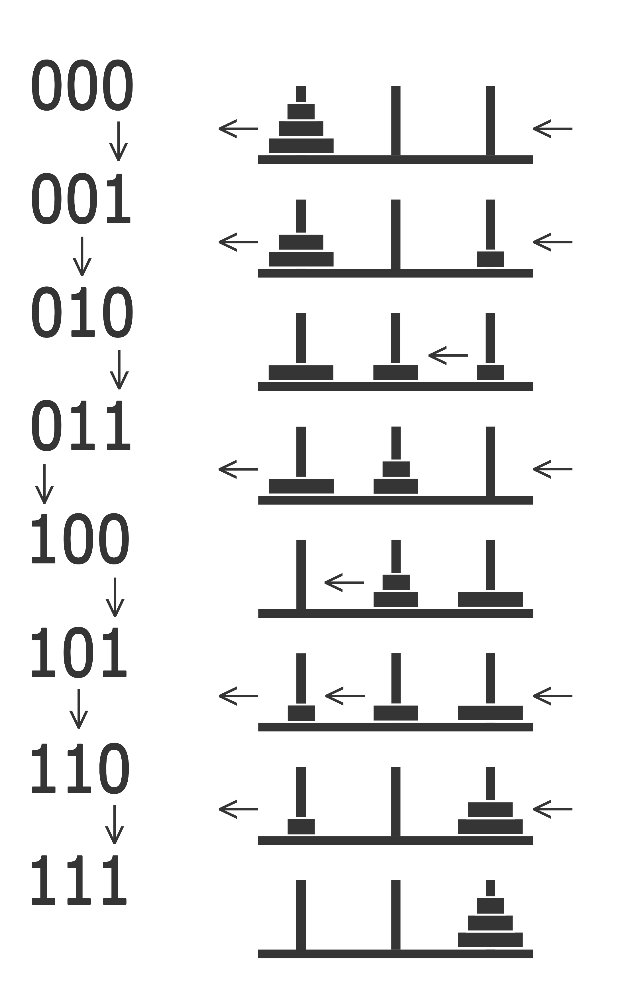

Polski
English
Zasady
Przygotowanie gry polega na skonstruowaniu wieży z krążków na pierwszej tyczce tak, aby średnica krążków malała wraz ze spiętrzaniem się wieży. Gra obejmuje zaledwie trzy główne zasady:
zawsze wyciągamy jeden krążek umieszczony na szczycie jednej z trzech tyczek;
można przekładać jeden krążek jednocześnie;
możemy położyć podniesiony krążek jedynie na taki o większej średnicy, lub tyczkę bez krążków;
Nadrzędnym celem gry jest przełożenie krążków tak aby odtworzyć początkową wieżę z pierwszej tyczki, na tyczce trzeciej.

Historia
Zagadka ta wywodzi się z Azji, a w Europie spopularyzował ją francuski matematyk. Hanoi jest to miasto leżące na terenie Wietnamu, a wieża swoją budową przypomina powstałe tam świątynie. Razem z zagadką popularna stała się legenda mówiąca o tym, że gdy tamtejsi mnisi zakończą przekładanie wieży o 64 piętrach na stąpi koniec świata. Według obliczeń najszybciej zrobią to w niecałe 600 miliardów lat.
Algorytmy
Powstało kilka podejść do rozwiązywania tego problemu. Dzięki ujednoliceniu i rozłożeniu całego procesu przekładania na poszczególne etapy jesteśmy w stanie systematycznie, krok po kroku, rozwiązywać łamigłówkę, nie martwiąc się mnogością opcji. Podejście rekurencyjne czy iteracyjne ułatwiają rozwiązywanie powierzonego nam zadania, tym bardziej jeśli zależy nam na optymalnej, czyli najmniejszej ilości ruchów, jak i najszybszym czasie ułożenia.
 
Podręcznik użytkownika
W celu zaznajomienia użytkownika z funkcjonowaniem aplikacji, aspekt informacyjny obejmuje również poradnik dla użytkownika. Działanie to pozwoli na zaprezentowanie możliwości aplikacji, przez co użytkownik będzie mógł dostosować ją do swoich własnych preferencji. Część interaktywna będzie pozwalała na dostosowanie wyzwania do umiejętności, ambicji czy cierpliwości układającego. Pozwoli na to konfigurator, który obejmuje możliwość dostosowania:
ilości krążków;
ułatwień układania wież;
kwesti widoczności czy estatycznych;
Marcin Oszczepińśki